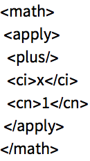

Både Git og Github er en plattform hvor en eller flere kan jobbe med prosjekter innenfor programmering , designing osv.Git er også teknologien bak GitHub.Git er mer brukt for å programmerere på et programDu kan dele med andre hvis dere er på lokalt nett.Mens Github er et nettsted som gjør mye av den samme jobben men siden platformen er på et nettsted er det letter å komme i kontakt med andre.Begge platformene gjør at du og ditt team kan gjøre endringer på koden , programvaren eller nettsiden dere utvikler fra hvor som helst i verden.Dette er veldig nyttig teknologi da utvikling innenfor teknologi ikke nødvendigvis gjør at alle må sitte i samme rom eller på samme kontor for å jobbe sammen.Alle endringene du gjør på ditt teams prosjekt får premanente ”tagger” så man ser hva som har blitt endret på av hvem og når det har blitt endret på.
På Github siden det er et nettsted har man muligheten til å dele , kommentere osv med andre fra platformen om man vil.Dette er et viktig arbeidsverktøy for deg som utvikler da nye mennesker kan komme med innspill til feks bedre løsninger om du sitter fast eller bare trenger litt insparasjon.Det går begger veier du kan også se på andres arbeid , om de har delt det.
Begge plattformene bruker noe som heter versjon kontroll system.Det vil si at når du arbeider sammen med et prosjekt så kan du tenkte deg at hver å et team medlem har masse filer hver og dere skal nå se over å sammenslå alle sine filer å jobbe sammen.Det som hadde skjedd da er at det ofte hadde ”kræsjet” sammen da alle skal gjøre om på hverandres filer samtidig og du hadde kanskje skrevet over noe som en annen hadde gjort samtidig som enda en hadde gjort endringer på den filen som hadde resultert i veldig mye surr og forvirring og ikke fungert så bra.Det version control gjør er at når hele teamet sitter å jobber på samme prosjekt og gjør endringer er at den kan si ifra at Hei nå gjør du endringer som overskriver Ola nordmans allerede eksisterne koder.Om du vil gjøre endringer kan du lage en Branch.
Hvis du ser for deg et tre , så er hoved prosjektet stammen og alle kvistene branchene (dine endringer).
Så om du lager en branch med endringer til prosjektet kan du senere sammenslå dette med alle de andre branchene og stammen slik at det blir mer organisert og enklere å holde oversikt på hvem som gjør hva. Disse platformene er et enormt godt arbeidsverktøy for utvikler miljøet som gjør det å samarbeide veldig mye enklere.
Det finnes flere forskjellige versjoner der ute av GitHub men Github er helt klart den største og mest brukte som igjen slår posetivt tilbake på brukeren , da det er flere å dele og komme i kontakt med
Tilbake til toppen
SVG (Scalable Vector Graphics) er et 2d vektorbasert bildeformat.SVG er en fil eller bilde som er basert på tekst eller en kode.En SVG fil kan bli skalert til forskjellige størrelser uten at den mister kvaliteten på bilde. Hvis du tar en JPG fil feks, JPG filen er i utgangspunktet et lite bilde men du vil gjerne ha det størrre til din nettside. Det som skjer da er at når du forstørrer bilde til å passe din ønsket størrelse er at bilde vil bli kornete og dårlig kvalitet på. Dette skjer ikke med SVG filer, de justerer seg etter ditt ønske og du kan forandre på størrelsen så mye du vil. Svg brukes ofte til å lage logoer, animasjoner , enkle illustrasjoner ,skjemaer eller grafer. Det er derfor disse filene ofte blir brukt til webdesign da du kan forstørre eller forminske så mye du vil og så lenge du vil.Den enkleste måten for å åpne en SVG fil for å se på den er å åpne den rett i en webbrowser som støtter dette fil formatet som feks chrome eller firefox.Men siden SVG er i bunn å grunn en tekst fil så kan du også åpne de i text-edit programmer som Notepad++ for å få opp selve teksten eller koden om du vil til filen. Det er også her du kan gjøre om på grafikken om du velger å lage en SVG fil.Du kan også bruke bildeprogrammer for å redigere din SVG fil som Inkscape eller adobe sketch. Hvis du åpner en SVG fil i feks word får du bare opp masse tegn og tall å koden er ikke leselig.Her skal jeg vise noen forskjellige former du kan lage med SVG i HTML.
Mathml er et kode språk som stammer fra XLM, noe også HTML gjør.Selvom HTML språket er stort og har massevis av forskjellige tagger for alt mulig har ikke matte blitt tatt med i betraktingen i HTML.Det er her MathML kommer inn.MathML er spesielt utviklet for mattematiske løsninger på web. Som feks datamaskin algebra systemer. Siden det ikke fantes noen måter å implementere mattematiske løsninger i koder på en bra måte før MathML ble utviklet ble utviklerne desperate og lagde gjerne bilder som viste feks en matte løsning for så sette inn i web siden sin for at det skulle se riktig ut og at det skulle se ut som en del av koden uten at det egentlig var det.
MathML er en strukturert måte å representerer matematiske formler.Det kan brukes i mange forbindelser som det ikke var mulig før som i forskning ,matte programmer,søkemotoroptimalisering.
En annen ting som MathML kan bli brukt til er programmer som er utviklet for de som ser dårlig.MathML er lett leselig for datamaskinen og kan da lett lese opp det som står i programmene for de som trenger tekst konvertering til tale.
MathML deles inn i tre forskjellige katogorier
Presentation MathML
brukes når kun presentasjonen er viktig , som i en webside hvor du kun vil vise frem feks en ligning.
Content MathML
Brukes i situasjoner hvor koding av matematiske problemer er viktig , kan brukes til en webside hvor det er viktig at leserne kan kopiere ligningen eller koden inn til matte programmer som feks Wolfram Language.

Combined markup
Dette er en blanding av Presentation MathML og Content MathML , brukes når du både vil kode utseende og et matematisk problem.
Tilbake til toppen